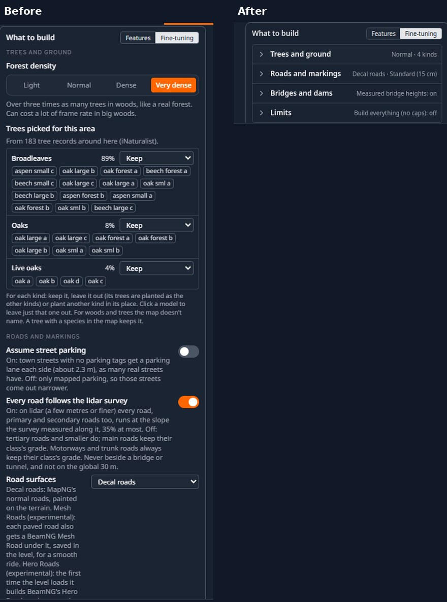
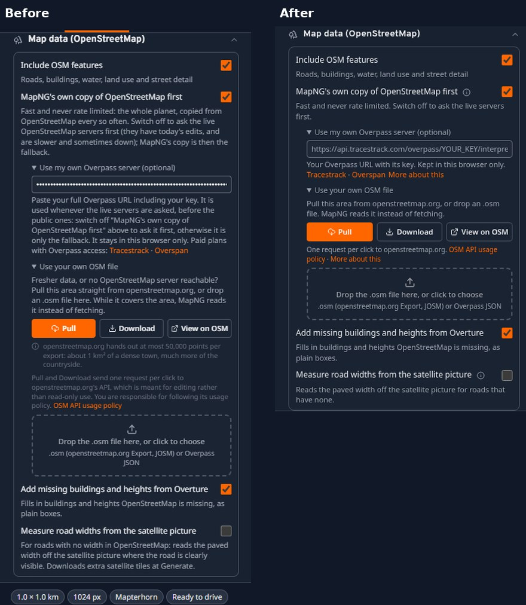
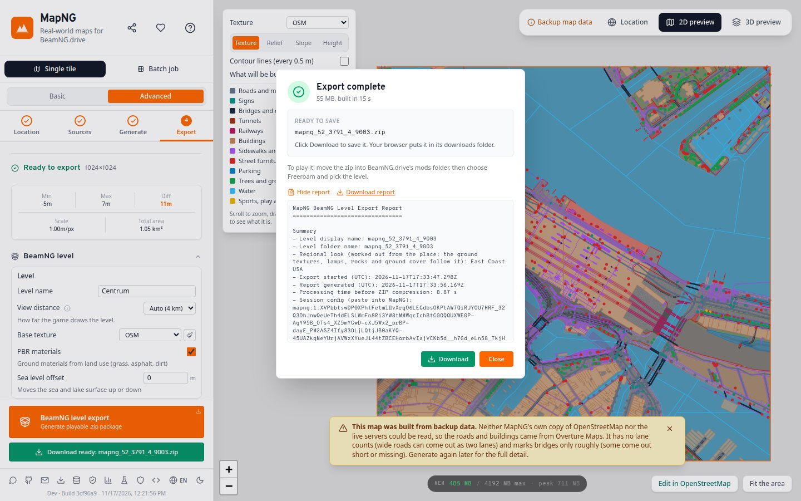
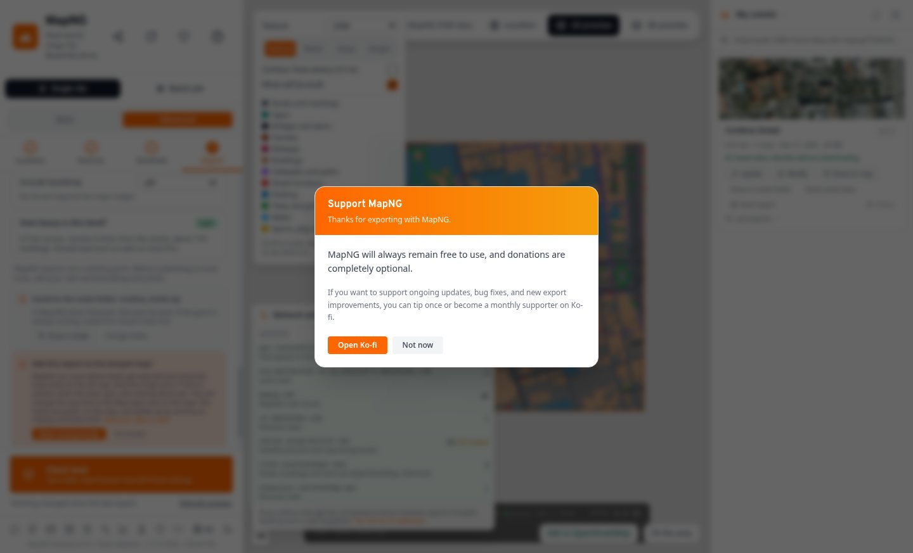

MapNG
MapNGThe control panel, with far less text
Every setting used to show its whole explanation all the time. Now each one shows a single short line. The full explanation is still there: click the small info button beside a setting's name, or More about this under a hint.
Fine-tuning in What to build opens as four rows that fold: trees and ground, roads and markings, bridges and dams, limits. Each row says what is set, so you can see your choices without opening anything. A tree kind shows its models when you click it.

The same was done across the panel: map data, spawn points, the area mask, the Terrain choice, view distance and the texture settings.

All of it is in every language MapNG speaks.
The export report, right where the export ends
Every level carries a report of what was built and what was changed. It used to be only a text file inside the zip. The Export complete window now has Export report, which opens it to scroll through, and Download report, which saves it as a text file. It works on the website and in the desktop app.

A live view of what MapNG connects to
A new button at the foot of the control panel opens Network activity: a panel docked at the lower left of the map that lists every address the app has connected to, how many requests it made, and what each address is for. It updates as things happen, so you can watch a Generate or an export reach for its data. An address that is not on MapNG's published list is shown first, in amber.
On the website it counts what the page has loaded since it opened, with how much data came back. In the desktop app it shows the app's own count, the export included, and anything the address guard refused. Nothing in the panel is sent anywhere.

The street map remembers where you have been
The pieces of MapNG's street map that you have looked at are now kept on your computer, up to about 150 MB, the oldest dropped first. Pan back over a place, or open MapNG again tomorrow, and the map draws without asking the server. It is quicker for you and lighter on MapNG's server. This works the same in the browser and in the desktop app.
The satellite and topo layers were already kept by your browser for a day, as their provider allows.
Small fixes
- The notice about drawing without a graphics driver no longer says “Windows” on Linux.
- Curb heights show their name and measure on two lines instead of wrapping.
- The older “More” folds in the panel use the same link as everywhere else.
Nothing about what MapNG builds changed in this version. Levels made with 0.3.3 come out the same.